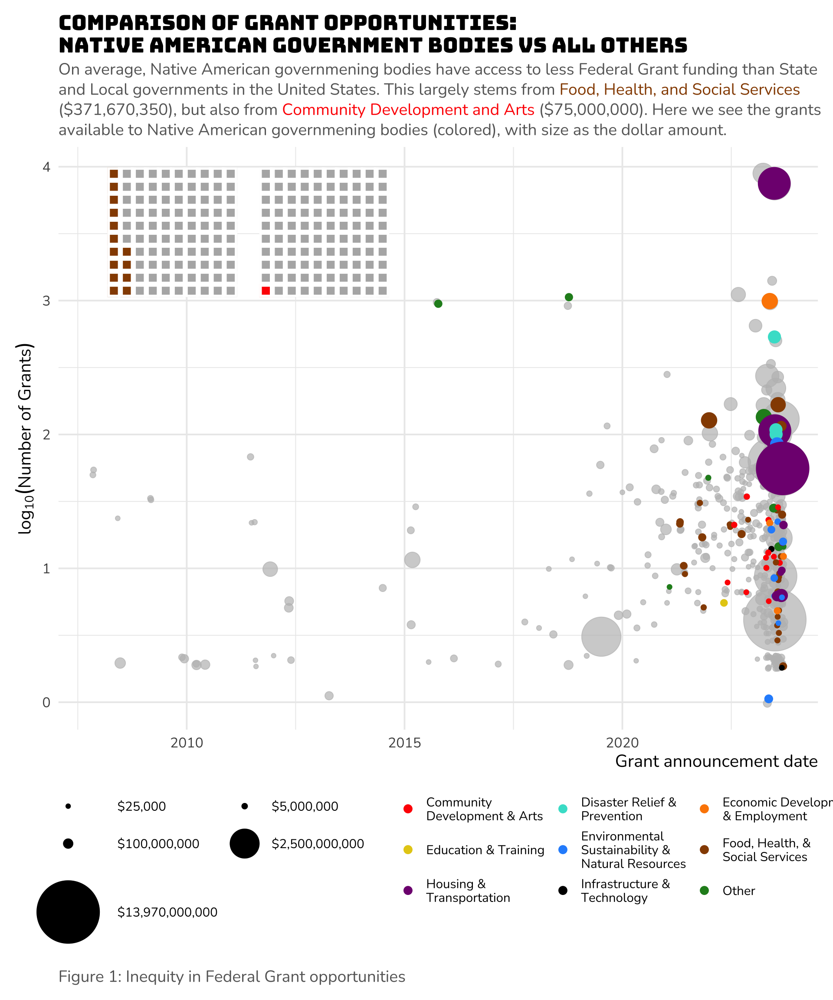
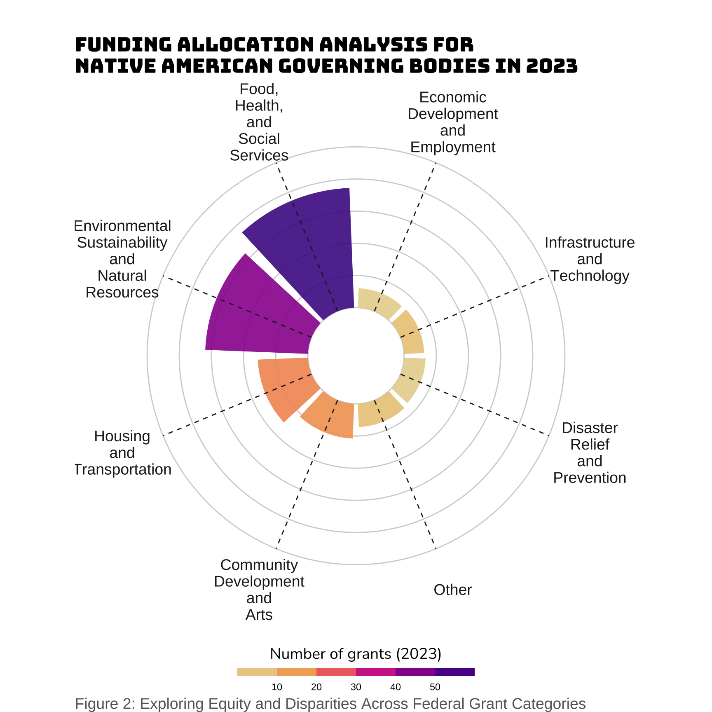

Equity in Federal Grant Allocation: Analyzing Disparities Among Eligible Groups
INFO 526 - Project 1
Abstract
In a diverse and evolving society, equitable distribution of resources, particularly in the context of federal grant funding, is of paramount importance. This project, titled “Equity in Federal Grant Allocation: Analyzing Disparities Among Eligible Groups,” aims to investigate the allocation of federal grant funds across various eligible groups to shed light on potential disparities and advocate for more equitable resource distribution.
Introduction
The study employs a comprehensive dataset of federal grant allocations over multiple years, encompassing a wide range of eligible groups, such as state and local governments, tribal organizations, and non-profit entities. Using advanced data analysis techniques, we explore patterns and trends in funding distribution to discern potential inequalities.
Our research methodology encompasses statistical analysis, data visualization, and demographic profiling. By dissecting these findings, we aim to uncover systematic differences in grant funding allocation based on eligibility criteria, such as the type of organization, geographical location, and program category.
The results of this study hold significant implications for policy-makers, grant administrators, and advocacy groups. By identifying and quantifying disparities, we seek to inform evidence-based policy recommendations aimed at achieving more equitable distribution of federal grant resources. Moreover, this research contributes to the broader dialogue on social justice and inclusive public policy, emphasizing the need for equitable opportunities and resources for all eligible groups.
Ultimately, our project strives to promote fairness and equal access to federal grant funding, contributing to the overarching goal of building a more equitable and inclusive society.
Question 1: Is there equity in Federal Government access?
Introduction:
The inequity in federal government grant opportunities is not a new concept, now am I addressing conclusively how to correct it. In this first question, I ask, in the Federal Grants available to the R4DS community, to what extent is their equity between Indigenous American governmental bodies and State and Local Governments. The answer is significant towards whether the diverse R4DS community will have equal opportunity towards grant funding within and outside of the organization.
The first question utilizes variables in a dataset that represents federal grants that the R4DS community has access to now that it is fiscally sponsored project of Open Collective Foundation (https://opencollective.foundation), a 501(c)(3) public charity.
Approach
To address this question, I created a composite figure that serves as a comprehensive visual representation of the grant landscape, meticulously comparing grant opportunities between Native American government bodies and other entities. By amalgamating scatter plots, waffle charts, and informative legends, this figure succinctly conveys key insights into the distribution of grant awards and funding levels across different time periods and categories. The striking contrast in funding patterns, highlighted through color-coded segments and log-transformed grant counts, underscores the significance of disparities in grant opportunities between Native American government bodies and their counterparts.
Analysis
Discussion:
The plot shows that there is serious inequity between Native American government bodies and State and Local governments, but only in the Food, Health, & Social Services and Community Development & Arts funding categories. This was actually surprising, since I initially created seemingly arbitrary category groupings, but they seemed to be appropriate. The most damning inequity is that Native American government bodies has access to $371,670,350 less than State and Local governments. Proportionally, the inequity in Community Development & Arts is much worse (~ 1/99), which is especially sad as these funding grants would aid seriously impoverished Native American tribal reservations.
By presenting a holistic view of grant data, this figure enables policymakers, grant administrators, and researchers to gain a deeper understanding of the challenges faced by Native American government bodies in accessing Federal grant funding, particularly in specific categories. This visualization serves as a powerful tool for informed decision-making, offering valuable insights into the allocation of resources and the potential areas where targeted support may be needed to address these disparities and promote equitable access to grant opportunities.
Question 2: How much money is available to Native American Governing bodies across funding category?
Introduction:
From Question 1, we know that there is inequity in available Federal Grant funding. I was then interested in determining what funding categories funding available for Native American Governing bodies. Historically, Health, Agriculture, and Social Services has had a lions share of federal grant funding. It is important to determine whether this holds true for Native American Governing bodies, especially since we know that there is inequity in our Food, Health, & Social Services category.
In light of the established inequities in available Federal Grant funding, our exploration extends to assess the allocation of funding across specific categories for Native American Governing bodies. Historically, the domains of Health, Agriculture, and Social Services have been recipients of substantial Federal Grant funding, asserting their prominence in resource distribution. To address the critical question of whether these trends persist within the context of Native American Governing bodies, our analysis zooms in on the funding landscape within these categories. This scrutiny becomes particularly pertinent, given the previously identified inequities within the Food, Health, & Social Services category. To unravel these dynamics, we employ a unique polar plot visualization, shedding light on the nuances of funding distribution, grant quantities, and potential areas requiring focused attention within this specific context.
Approach
To quantify the available funding for Native American Governing bodies across diverse funding categories, I employed a systematic approach. Initially, I meticulously filtered the data to isolate records pertinent to these entities, ensuring the analysis exclusively revolved around Native American Governing bodies. Subsequently, I applied logarithmic transformation (\(\log_{10}\)) to the estimated total program funding values to standardize the funding metrics and facilitate effective visualization.
With the data thus prepared, I proceeded to group and summarize it. Specifically, I grouped the data based on “category groups,” each representing a distinct funding category. Within these groups, I computed the cumulative funding amount, providing insight into the financial allocation for each category. Simultaneously, I tallied the number of grants within each category. This comprehensive data preparation and summarization paved the way for an innovative polar plot visualization, revealing the funding distribution and grant quantity disparities across categories. In essence, this approach amalgamated data transformation, grouping, summarization, and creative visualization to offer a succinct and illuminating analysis of funding accessibility for Native American Governing bodies in 2023.

Discussion
This plot provides a unique and insightful perspective on the distribution of available funding for Native American and Indian Entities in the year 2023 across different grant categories. It accomplishes this by visualizing the total funding amounts (represented by the height of the bars) allocated to various “category groups.” Each bar is further divided into segments, representing the number of grants (indicated by the fill color intensity). The dashed lines extending from the center of the plot to the outer edge create a radial effect, emphasizing the scale of funding variation within each category group. The choice of a polar coordinate system adds an artistic touch to the visualization, making it visually appealing and easy to interpret.
The significance of this plot lies in its ability to provide a clear and comprehensive understanding of funding distribution patterns for Native American and Indian Entities in 2023. It allows viewers to quickly identify which category groups receive the most and least funding while also highlighting the variation in the number of grants within each category. The polar arrangement and the use of color intensity make it easy to compare funding levels across different categories, revealing potential areas of focus for policymakers, grant administrators, and organizations working with Native American and Indian Entities. Overall, this plot offers a visually engaging and informative representation of funding disparities and can help guide decision-making processes to promote equitable allocation of resources among different grant categories.